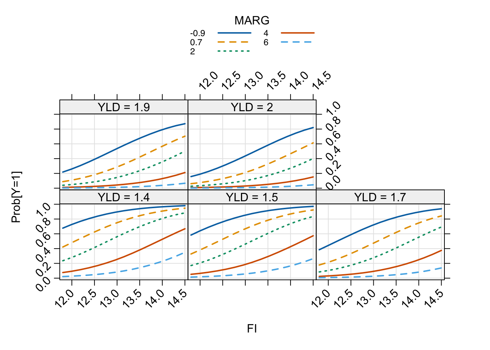
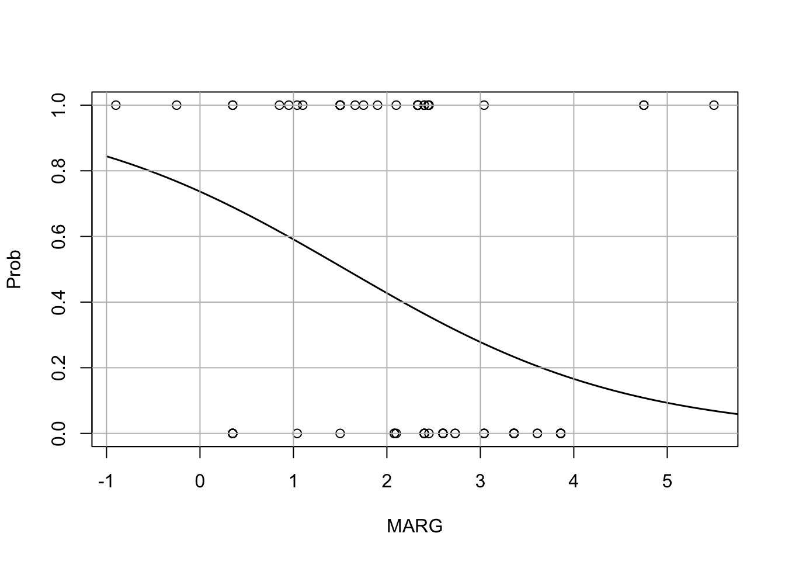
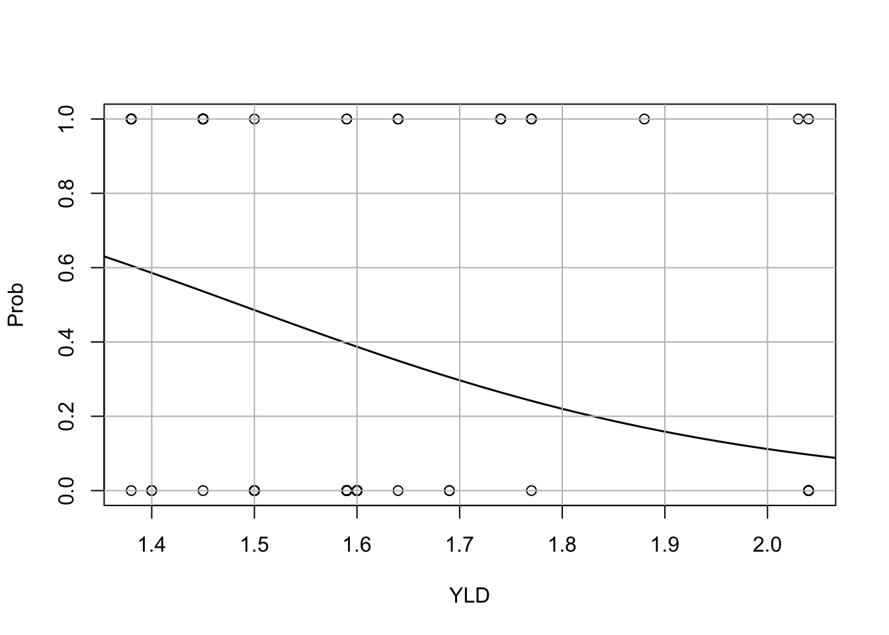

Aplicación 3.12 (Variable dependiente discreta o limitada): Modelos Logit/Probit, Tobit y Heckit
Variable dependiente discreta (modelos Logit y Probit): Préstamos hipotecarios
En un artículo del año 1987, Dhillon y otros autores estudiaron el conjunto de características personales y financieras que determinan la elección por parte de los individuos de un tipo de interés fijo frente a uno variable a la hora de contratar un préstamo hipotecario. El interés de su trabajo radicaba en contrastar las dos posturas que dominan los planteamientos teóricos sobre el tema: la primera de ellas opina que, de acuerdo con la hipótesis de mercados eficientes, las características personales del prestatario no contienen información que no haya sido ya tenida en cuenta por el mercado a la hora de fijar el tipo de interés y, por tanto, sólo las variables de precios y los términos del contrato serían relevantes cuando un individuo elige el tipo de interés que se le aplicará; la segunda escuela de pensamiento supone que existe información asimétrica, es decir, dadas las condiciones del mercado, los prestatarios pueden favorecerse no revelando algunas de sus características personales a la hora de firmar el contrato.
El modelo propuesto relaciona la probabilidad de que un individuo elija, dadas sus características personales y las condiciones del mercado, un tipo de interés variable frente a uno fijo para un préstamo hipotecario. Se dispone de una muestra de 78 clientes de un banco hipotecario norteamericano. Del total de observaciones, 46 eligieron un tipo de interés fijo (con vencimiento de 30 años) y 32 un tipo de interés variable (no acotado).
Las variables disponibles para estimar el modelo son las siguientes:
Variable dependiente: \(Y\) toma el valor 1 si el individuo elige un tipo de interés variable y 0 si firma el préstamo a un tipo fijo.
Variables explicativas del mercado: \(FI\) es el tipo de interés fijo que ofertó el banco, \(MARG\) el margen del tipo fijo sobre el tipo de interés variable, \(YLD\) la diferencia entre el tipo de interés de las letras del tesoro a 10 años y el tipo de las letras a 1 año (esta variable intenta anticipar el cambio futuro en los tipos de interés a corto plazo), \(PTS\) la razón entre el tipo de interés fijo y el variable, y \(MAT\) la razón entre los vencimientos de los préstamos hipotecarios con tipo fijo y variable.
Variables explicativas personales: \(BA\) es la edad del prestatario, \(BS\) los años de escolarización, \(FTB\) una variable ficticia que toma el valor 1 si el prestatario compra vivienda por primera vez y 0 en otro caso, \(CB\) una ficticia que toma el valor 1 si existe un co-prestatario y 0 en otro caso, \(MC\) una ficticia que toma el valor 1 si el prestatario está casado y 0 si no lo está, \(SE\) una ficticia que toma el valor 1 si trabaja por cuenta propia y 0 en otro caso, \(MOB\) el número de años que el prestatario lleva residiendo en la dirección actual, \(NW\) la riqueza neta, \(LA\) los activos líquidos, y \(STL\) los compromisos económicos del prestatario a corto plazo.
El modelo econométrico general que se estimará tiene la siguiente expresión:
\[Y_{i} = \beta_1 + \beta_2 FI_{i} + \beta_3 MARG_{i} + \beta_4 YLD_{i} + \beta_5 PTS_{i} + \beta_6 MAT_{i} +\] \[+ \beta_7 BA_{i} + \beta_8 BS_{i} + \beta_9 FTB_{i} + \beta_{10} CB_{i} + \beta_{11} MC_{i} + \] \[+ \beta_{12} SE_{i} + \beta_{13} MOB_{i} + \beta_{14} NW_{i} + \beta_{15} LA_{i} + \beta_{16} STL_{i} + e_{i}\]
Código R
# Lectura de librerías
library(tidyverse)
library(AER)
library(alr4)
library(margins)
# Lectura de datos
PREST_HIP <- read_csv("data/PREST_HIP.csv")
summary(PREST_HIP) BA BS CB FI
Min. :24.00 Min. : 6.00 Min. :0.000 Min. :11.76
1st Qu.:31.00 1st Qu.:14.00 1st Qu.:0.000 1st Qu.:12.50
Median :36.50 Median :16.00 Median :0.000 Median :13.50
Mean :36.04 Mean :16.45 Mean :0.359 Mean :13.25
3rd Qu.:40.50 3rd Qu.:18.00 3rd Qu.:1.000 3rd Qu.:13.75
Max. :65.00 Max. :25.00 Max. :1.000 Max. :14.50
FTB LA MARG MAT
Min. :0.0000 Min. : 0.0000 Min. :-0.900 Min. :0.420
1st Qu.:0.0000 1st Qu.: 0.6675 1st Qu.: 1.500 1st Qu.:0.930
Median :1.0000 Median : 1.3550 Median : 2.400 Median :1.000
Mean :0.6154 Mean : 5.6827 Mean : 2.292 Mean :1.058
3rd Qu.:1.0000 3rd Qu.: 8.9100 3rd Qu.: 3.040 3rd Qu.:1.000
Max. :1.0000 Max. :93.4900 Max. : 5.500 Max. :2.380
MC MOB NW PTS
Min. :0.0000 Min. : 1.000 Min. :-0.0560 Min. :0.000
1st Qu.:0.0000 1st Qu.: 1.000 1st Qu.: 0.3585 1st Qu.:1.000
Median :1.0000 Median : 2.000 Median : 0.7945 Median :1.660
Mean :0.6026 Mean : 4.205 Mean : 3.5040 Mean :1.498
3rd Qu.:1.0000 3rd Qu.: 4.000 3rd Qu.: 7.5575 3rd Qu.:2.022
Max. :1.0000 Max. :28.000 Max. :17.8600 Max. :4.340
SE STL Y YLD
Min. :0.0000 Min. : 0.00 Min. :0.0000 Min. :1.380
1st Qu.:0.0000 1st Qu.: 3.69 1st Qu.:0.0000 1st Qu.:1.450
Median :0.0000 Median : 8.44 Median :0.0000 Median :1.590
Mean :0.1026 Mean :13.42 Mean :0.4103 Mean :1.606
3rd Qu.:0.0000 3rd Qu.:19.43 3rd Qu.:1.0000 3rd Qu.:1.640
Max. :1.0000 Max. :86.35 Max. :1.0000 Max. :2.040 # Modelo logit
modelo_logit <- glm(Y ~
FI + MARG + YLD + PTS + MAT + BA + BS + FTB + CB + MC +
SE + MOB + NW + LA + STL,
data=PREST_HIP, family=binomial(link="logit"))
summary(modelo_logit)
Call:
glm(formula = Y ~ FI + MARG + YLD + PTS + MAT + BA + BS + FTB +
CB + MC + SE + MOB + NW + LA + STL, family = binomial(link = "logit"),
data = PREST_HIP)
Coefficients:
Estimate Std. Error z value Pr(>|z|)
(Intercept) -4.23887 10.47904 -0.405 0.6858
FI 1.71750 0.72773 2.360 0.0183 *
MARG -1.18952 0.48545 -2.450 0.0143 *
YLD -4.62670 2.91972 -1.585 0.1130
PTS -1.49980 0.71993 -2.083 0.0372 *
MAT -2.05707 1.63112 -1.261 0.2073
BA -0.01048 0.07569 -0.138 0.8899
BS -0.19825 0.17245 -1.150 0.2503
FTB 0.11092 0.98371 0.113 0.9102
CB -1.75974 1.24217 -1.417 0.1566
MC -1.92294 1.18297 -1.626 0.1041
SE -2.20851 2.80100 -0.788 0.4304
MOB -0.15308 0.09700 -1.578 0.1145
NW 0.24406 0.18503 1.319 0.1872
LA 0.02207 0.06101 0.362 0.7176
STL 0.03156 0.05172 0.610 0.5417
---
Signif. codes: 0 '***' 0.001 '**' 0.01 '*' 0.05 '.' 0.1 ' ' 1
(Dispersion parameter for binomial family taken to be 1)
Null deviance: 105.604 on 77 degrees of freedom
Residual deviance: 61.792 on 62 degrees of freedom
AIC: 93.792
Number of Fisher Scoring iterations: 6# Modelo probit
modelo_probit <- glm(Y ~ FI + MARG + YLD + PTS + MAT + BA + BS + FTB + CB +
MC + SE + MOB + NW + LA + STL,
data=PREST_HIP, family=binomial(link="probit"))
summary(modelo_probit)
Call:
glm(formula = Y ~ FI + MARG + YLD + PTS + MAT + BA + BS + FTB +
CB + MC + SE + MOB + NW + LA + STL, family = binomial(link = "probit"),
data = PREST_HIP)
Coefficients:
Estimate Std. Error z value Pr(>|z|)
(Intercept) -3.107496 5.877216 -0.529 0.5970
FI 1.008059 0.410667 2.455 0.0141 *
MARG -0.705235 0.272291 -2.590 0.0096 **
YLD -2.525164 1.588075 -1.590 0.1118
PTS -0.830267 0.397719 -2.088 0.0368 *
MAT -1.164395 0.894643 -1.302 0.1931
BA -0.003978 0.042864 -0.093 0.9261
BS -0.108266 0.099792 -1.085 0.2780
FTB 0.143454 0.558299 0.257 0.7972
CB -1.066544 0.692153 -1.541 0.1233
MC -1.058573 0.672743 -1.574 0.1156
SE -1.127484 1.559724 -0.723 0.4698
MOB -0.093035 0.054982 -1.692 0.0906 .
NW 0.128775 0.105279 1.223 0.2213
LA 0.014615 0.034992 0.418 0.6762
STL 0.016129 0.028296 0.570 0.5687
---
Signif. codes: 0 '***' 0.001 '**' 0.01 '*' 0.05 '.' 0.1 ' ' 1
(Dispersion parameter for binomial family taken to be 1)
Null deviance: 105.604 on 77 degrees of freedom
Residual deviance: 61.459 on 62 degrees of freedom
AIC: 93.459
Number of Fisher Scoring iterations: 7# Significación de las características personales
linearHypothesis ( modelo_logit , c("BA = 0", "BS = 0","FTB = 0","CB = 0",
"MC = 0","SE = 0","MOB = 0","NW = 0",
"LA = 0","STL = 0"))Linear hypothesis test
Hypothesis:
BA = 0
BS = 0
FTB = 0
CB = 0
MC = 0
SE = 0
MOB = 0
NW = 0
LA = 0
STL = 0
Model 1: restricted model
Model 2: Y ~ FI + MARG + YLD + PTS + MAT + BA + BS + FTB + CB + MC + SE +
MOB + NW + LA + STL
Res.Df Df Chisq Pr(>Chisq)
1 72
2 62 10 12.728 0.2393# Modelos logit restringidos
modelo_logit_1 <- glm(Y ~ FI + MARG + YLD + PTS + MAT, data=PREST_HIP,
family=binomial(link="logit"))
summary(modelo_logit_1)
Call:
glm(formula = Y ~ FI + MARG + YLD + PTS + MAT, family = binomial(link = "logit"),
data = PREST_HIP)
Coefficients:
Estimate Std. Error z value Pr(>|z|)
(Intercept) -6.7318 7.0594 -0.954 0.34029
FI 1.2646 0.4540 2.785 0.00535 **
MARG -0.7178 0.3138 -2.287 0.02218 *
YLD -4.8275 1.9588 -2.465 0.01372 *
PTS -0.3590 0.4234 -0.848 0.39641
MAT -0.5503 1.0366 -0.531 0.59549
---
Signif. codes: 0 '***' 0.001 '**' 0.01 '*' 0.05 '.' 0.1 ' ' 1
(Dispersion parameter for binomial family taken to be 1)
Null deviance: 105.604 on 77 degrees of freedom
Residual deviance: 82.946 on 72 degrees of freedom
AIC: 94.946
Number of Fisher Scoring iterations: 4linearHypothesis ( modelo_logit_1, c("PTS = 0", "MAT = 0"))Linear hypothesis test
Hypothesis:
PTS = 0
MAT = 0
Model 1: restricted model
Model 2: Y ~ FI + MARG + YLD + PTS + MAT
Res.Df Df Chisq Pr(>Chisq)
1 74
2 72 2 0.959 0.6191modelo_logit_2 <- glm(Y ~ FI + MARG + YLD,
data=PREST_HIP, family=binomial(link="logit"))
summary(modelo_logit_2)
Call:
glm(formula = Y ~ FI + MARG + YLD, family = binomial(link = "logit"),
data = PREST_HIP)
Coefficients:
Estimate Std. Error z value Pr(>|z|)
(Intercept) -8.1920 6.8807 -1.191 0.23382
FI 1.1846 0.4387 2.700 0.00693 **
MARG -0.6608 0.2852 -2.317 0.02049 *
YLD -4.0305 1.7131 -2.353 0.01864 *
---
Signif. codes: 0 '***' 0.001 '**' 0.01 '*' 0.05 '.' 0.1 ' ' 1
(Dispersion parameter for binomial family taken to be 1)
Null deviance: 105.604 on 77 degrees of freedom
Residual deviance: 83.959 on 74 degrees of freedom
AIC: 91.959
Number of Fisher Scoring iterations: 4# Matriz de convarianzas robusta
coeftest(modelo_logit_2, vcov. = vcovHC, type = "HC1")
z test of coefficients:
Estimate Std. Error z value Pr(>|z|)
(Intercept) -8.19199 8.03329 -1.0198 0.30784
FI 1.18465 0.57315 2.0669 0.03874 *
MARG -0.66076 0.30026 -2.2006 0.02776 *
YLD -4.03050 1.83833 -2.1925 0.02834 *
---
Signif. codes: 0 '***' 0.001 '**' 0.01 '*' 0.05 '.' 0.1 ' ' 1# Ajuste del modelo: pseudoR2
pseudoR2 <- 1 - (modelo_logit_2$deviance) / (modelo_logit_2$null.deviance)
pseudoR2[1] 0.2049648# Fórmula equivalente
modelo_logit_0 <- glm(Y ~ 1, data=PREST_HIP, family=binomial(link="logit"))
1 - logLik(modelo_logit_2)[1]/logLik(modelo_logit_0)[1][1] 0.2049648# ANOVA
Anova(modelo_logit_2)Analysis of Deviance Table (Type II tests)
Response: Y
LR Chisq Df Pr(>Chisq)
FI 8.3553 1 0.003846 **
MARG 6.2076 1 0.012720 *
YLD 6.1767 1 0.012945 *
---
Signif. codes: 0 '***' 0.001 '**' 0.01 '*' 0.05 '.' 0.1 ' ' 1# Tabla de éxito-fracaso (confusion matrix)
table(true=PREST_HIP$Y, predicted=round(fitted(modelo_logit_2))) predicted
true 0 1
0 37 9
1 11 21# Gráficas de efectos marginales
# Gráfica conjunta
effs <- Effect(c("FI", "MARG","YLD"), modelo_logit_2)
plot(effs, multiline=TRUE, grid=TRUE, lines=c(1, 2, 3),
xlab="FI",main="", rotx=45, roty = 45,
ylab="Prob[Y=1]", rescale.axis=FALSE, rug=FALSE)
# Gráficas separadas
# Función de probabilidad estimada para la variable FI
plot( Y ~ FI, PREST_HIP, xlab="FI", ylab="Prob", ylim=c(0,1))
FInew <- seq(10, 20, length=78)
lines(FInew, predict(modelo_logit_2,
newdata=data.frame(FI=FInew,
MARG=rep(mean(PREST_HIP$MARG), 78),
YLD=rep(mean(PREST_HIP$YLD), 78)),
type="response"), lwd=1.5)
grid(col="gray", lty="solid")
# Función de probabilidad estimada para la variable MARG
plot( Y ~ MARG, PREST_HIP, xlab="MARG", ylab="Prob", ylim=c(0,1))
MARGnew <- seq(-1, 6, length=78)
lines(MARGnew, predict(modelo_logit_2,
newdata=data.frame(FI=rep(mean(PREST_HIP$FI), 78),
MARG=MARGnew,
YLD=rep(mean(PREST_HIP$YLD), 78)),
type="response"), lwd=1.5)
grid(col="gray", lty="solid")
# Función de probabilidad estimada para la variable YLD
plot( Y ~ YLD, PREST_HIP, xlab="YLD", ylab="Prob", ylim=c(0,1))
YLDnew <- seq(1, 2.5, length=78)
lines(YLDnew, predict(modelo_logit_2,
newdata=data.frame(FI=rep(mean(PREST_HIP$FI), 78),
MARG=rep(mean(PREST_HIP$MARG), 78),
YLD=YLDnew),
type="response"), lwd=1.5)
grid(col="gray", lty="solid")
# Efecto marginal en la media de las variables explicativas
EMM_logit = mfx::logitmfx(formula = modelo_logit_2$formula,
data = modelo_logit_2$data, atmean = TRUE)
print(EMM_logit[[1]]) dF/dx Std. Err. z P>|z|
FI 0.2793924 0.10036058 2.783886 0.005371188
MARG -0.1558367 0.06775255 -2.300085 0.021443381
YLD -0.9505699 0.40847037 -2.327145 0.019957534# Efecto marginal promedio (EMP)
EMP_logit = mfx::logitmfx(formula = modelo_logit_2$formula,
data = modelo_logit_2$data, atmean = FALSE)
print(EMP_logit[[1]]) dF/dx Std. Err. z P>|z|
FI 0.2137508 0.09751929 2.191883 0.02838798
MARG -0.1192238 0.06044562 -1.972413 0.04856242
YLD -0.7272391 0.36590870 -1.987488 0.04686835# Forma alternativa del EMP
margins(modelo_logit_2) FI MARG YLD
0.2138 -0.1192 -0.7272Código Python
# Lectura de librerías
import numpy as np
import pandas as pd
import matplotlib.pyplot as plt
import statsmodels.formula.api as smf
import statsmodels.api as sm
# Lectura de datos
PREST_HIP = pd.read_csv("data/PREST_HIP.csv")
PREST_HIP.describe() BA BS CB ... STL Y YLD
count 78.000000 78.000000 78.000000 ... 78.000000 78.000000 78.000000
mean 36.038462 16.448718 0.358974 ... 13.422179 0.410256 1.606410
std 8.052494 3.730003 0.482805 ... 15.230270 0.495064 0.184616
min 24.000000 6.000000 0.000000 ... 0.000000 0.000000 1.380000
25% 31.000000 14.000000 0.000000 ... 3.690000 0.000000 1.450000
50% 36.500000 16.000000 0.000000 ... 8.440000 0.000000 1.590000
75% 40.500000 18.000000 1.000000 ... 19.435000 1.000000 1.640000
max 65.000000 25.000000 1.000000 ... 86.350000 1.000000 2.040000
[8 rows x 16 columns]# Modelo logit
modelo_logit = smf.glm("Y ~ 1 + FI + MARG + YLD", data = PREST_HIP,
family = sm.families.Binomial(link = sm.genmod.families.links.logit())).fit()
print(modelo_logit.summary()) Generalized Linear Model Regression Results
==============================================================================
Dep. Variable: Y No. Observations: 78
Model: GLM Df Residuals: 74
Model Family: Binomial Df Model: 3
Link Function: logit Scale: 1.0000
Method: IRLS Log-Likelihood: -41.980
Date: Tue, 07 Nov 2023 Deviance: 83.959
Time: 07:09:14 Pearson chi2: 91.9
No. Iterations: 4 Pseudo R-squ. (CS): 0.2423
Covariance Type: nonrobust
==============================================================================
coef std err z P>|z| [0.025 0.975]
------------------------------------------------------------------------------
Intercept -8.1920 6.881 -1.191 0.234 -21.678 5.294
FI 1.1846 0.439 2.700 0.007 0.325 2.045
MARG -0.6608 0.285 -2.317 0.020 -1.220 -0.102
YLD -4.0305 1.713 -2.353 0.019 -7.388 -0.673
==============================================================================# Formulación alternativa del modelo logit
modelo_logit = smf.logit("Y ~ 1 + FI + MARG + YLD", data = PREST_HIP).fit()Optimization terminated successfully.
Current function value: 0.538200
Iterations 6print(modelo_logit.summary()) Logit Regression Results
==============================================================================
Dep. Variable: Y No. Observations: 78
Model: Logit Df Residuals: 74
Method: MLE Df Model: 3
Date: Tue, 07 Nov 2023 Pseudo R-squ.: 0.2050
Time: 07:09:14 Log-Likelihood: -41.980
converged: True LL-Null: -52.802
Covariance Type: nonrobust LLR p-value: 7.731e-05
==============================================================================
coef std err z P>|z| [0.025 0.975]
------------------------------------------------------------------------------
Intercept -8.1920 6.881 -1.191 0.234 -21.678 5.294
FI 1.1846 0.439 2.700 0.007 0.325 2.045
MARG -0.6608 0.285 -2.317 0.020 -1.220 -0.102
YLD -4.0305 1.713 -2.353 0.019 -7.388 -0.673
==============================================================================# Modelo probit
modelo_probit = smf.probit("Y ~ 1 + FI + MARG + YLD", data = PREST_HIP).fit()Optimization terminated successfully.
Current function value: 0.542249
Iterations 5print(modelo_probit.summary()) Probit Regression Results
==============================================================================
Dep. Variable: Y No. Observations: 78
Model: Probit Df Residuals: 74
Method: MLE Df Model: 3
Date: Tue, 07 Nov 2023 Pseudo R-squ.: 0.1990
Time: 07:09:14 Log-Likelihood: -42.295
converged: True LL-Null: -52.802
Covariance Type: nonrobust LLR p-value: 0.0001046
==============================================================================
coef std err z P>|z| [0.025 0.975]
------------------------------------------------------------------------------
Intercept -4.2090 3.914 -1.075 0.282 -11.881 3.463
FI 0.6453 0.236 2.740 0.006 0.184 1.107
MARG -0.4080 0.163 -2.504 0.012 -0.727 -0.089
YLD -2.2888 0.988 -2.318 0.020 -4.224 -0.353
==============================================================================# Tabla de éxito-fracaso
tmp_out_1 = modelo_logit.pred_table(threshold = 0.5)
print(pd.DataFrame(tmp_out_1,
columns = ["Predichos 0", "Predichos 1"],
index = ["Observados 0", "Observados 1"])) Predichos 0 Predichos 1
Observados 0 37.0 9.0
Observados 1 11.0 21.0# Formulación alternativa
from sklearn import metrics
predicted_probs_logit = modelo_logit.predict(exog = PREST_HIP)
tmp_out_2 = metrics.confusion_matrix(modelo_logit.model.endog,
np.where(predicted_probs_logit >= 0.5, 1, 0))
print(pd.DataFrame(tmp_out_2,
columns = ["Predichos 0", "Predichos 1"],
index = ["Observados 0", "Observados 1"])) Predichos 0 Predichos 1
Observados 0 37 9
Observados 1 11 21# Precisión global del modelo en términos de predicción
tmp_accuracy = metrics.accuracy_score(modelo_logit.model.endog,
np.where(predicted_probs_logit >= 0.5, 1, 0))
print(np.round(tmp_accuracy,4)) 0.7436# Efecto marginal en la media de las variables explicativas
EMM_logit = modelo_logit.get_margeff(at = "mean")
print(EMM_logit.summary()) Logit Marginal Effects
=====================================
Dep. Variable: Y
Method: dydx
At: mean
==============================================================================
dy/dx std err z P>|z| [0.025 0.975]
------------------------------------------------------------------------------
FI 0.2794 0.100 2.784 0.005 0.083 0.476
MARG -0.1558 0.068 -2.300 0.021 -0.289 -0.023
YLD -0.9506 0.408 -2.327 0.020 -1.751 -0.150
==============================================================================# Efecto marginal promedio
EMP_logit = modelo_logit.get_margeff(at = "overall")
print(EMP_logit.summary()) Logit Marginal Effects
=====================================
Dep. Variable: Y
Method: dydx
At: overall
==============================================================================
dy/dx std err z P>|z| [0.025 0.975]
------------------------------------------------------------------------------
FI 0.2138 0.065 3.274 0.001 0.086 0.342
MARG -0.1192 0.045 -2.648 0.008 -0.207 -0.031
YLD -0.7272 0.268 -2.719 0.007 -1.252 -0.203
==============================================================================Variable dependiente limitada (valores censurados -> modelo Tobit): Compra de automóviles
En un trabajo encargado por una asociación de fabricantes de automóviles, se estimó un modelo microeconométrico en el que se relacionaba el gasto en automóviles realizado por las familias que componían una muestra representativa con algunas características socioeconómicas de las mismas.
La ecuación de comportamiento especificada fue la siguiente:
\[GAUT_{i} = \beta_1 + \beta_2 Y_{i} + \beta_3 HIJOSM18_{i} + \beta_4 EDAD_{i} + e_{i}\]
donde \(GAUT\) es el gasto familiar efectuado en la adquisición de automóviles en el último año, \(Y\) es la renta familiar total del último ejercicio fiscal, \(HIJOSM18\) es el número de hijos con edades inferiores a dieciocho años, y \(EDAD\) es la edad del cabeza de familia.
Código R
# Lectura de librerías
library(tidyverse)
library(censReg) # http://www.sampleselection.org/
# Lectura de datos
AUTOS <- read_csv("data/AUTOS.csv")
summary(AUTOS) EDAD GAUT HIJOSM18 Y
Min. :30.00 Min. : 0 Min. :0.000 Min. : 750
1st Qu.:38.00 1st Qu.: 0 1st Qu.:0.000 1st Qu.: 7714
Median :46.00 Median : 0 Median :1.000 Median :10440
Mean :45.12 Mean :1850 Mean :1.591 Mean :11540
3rd Qu.:52.00 3rd Qu.:3580 3rd Qu.:3.000 3rd Qu.:14100
Max. :60.00 Max. :9980 Max. :8.000 Max. :48000 # Datos censurados: modelo Tobit
# Librería censReg
# (https://cran.r-project.org/web/packages/censReg/vignettes/censReg.pdf)
modelo_tobit_1 <- censReg(GAUT ~ EDAD + HIJOSM18 + Y, data = AUTOS)
summary(modelo_tobit_1)
Call:
censReg(formula = GAUT ~ EDAD + HIJOSM18 + Y, data = AUTOS)
Observations:
Total Left-censored Uncensored Right-censored
753 417 336 0
Coefficients:
Estimate Std. error t value Pr(> t)
(Intercept) 3337.95574 1683.38404 1.983 0.0474 *
EDAD -44.11124 32.48820 -1.358 0.1745
HIJOSM18 -289.11846 182.60176 -1.583 0.1133
Y -0.60588 0.02136 -28.365 <2e-16 ***
logSigma 8.54026 NaN NaN NaN
---
Signif. codes: 0 '***' 0.001 '**' 0.01 '*' 0.05 '.' 0.1 ' ' 1
Newton-Raphson maximisation, 5 iterations
Return code 3: Last step could not find a value above the current.
Boundary of parameter space?
Consider switching to a more robust optimisation method temporarily.
Log-likelihood: -4107.679 on 5 Df# Efectos marginales
# Evaluados en un valor concreto de las var. explicativas
# (media de las variables en este caso)
margEff(modelo_tobit_1,
xValues = c(1,mean(AUTOS$EDAD),mean(AUTOS$HIJOSM18),mean(AUTOS$Y))) EDAD HIJOSM18 Y
-5.13563279 -33.66049621 -0.07053975 # Efectos marginales promedio
margEff(modelo_tobit_1) EDAD HIJOSM18 Y
-5.13563279 -33.66049621 -0.07053975 # Librería VGAM (https://www.stat.auckland.ac.nz/~yee/VGAM/)
library(VGAM)
modelo_tobit_2 <- vglm(GAUT ~ EDAD + HIJOSM18 + Y, family = tobit,
data = AUTOS)
summary(modelo_tobit_2)
Call:
vglm(formula = GAUT ~ EDAD + HIJOSM18 + Y, family = tobit, data = AUTOS)
Coefficients:
Estimate Std. Error z value Pr(>|z|)
(Intercept):1 3329.58619 1327.87243 2.507 0.012160 *
(Intercept):2 8.40621 0.04143 202.910 < 2e-16 ***
EDAD -94.42435 25.90272 -3.645 0.000267 ***
HIJOSM18 -576.00676 148.16899 -3.887 0.000101 ***
Y 0.14027 0.02907 4.825 1.4e-06 ***
---
Signif. codes: 0 '***' 0.001 '**' 0.01 '*' 0.05 '.' 0.1 ' ' 1
Names of linear predictors: mu, loglink(sd)
Log-likelihood: -3575.642 on 1501 degrees of freedom
Number of Fisher scoring iterations: 7
No Hauck-Donner effect found in any of the estimatesCódigo Python
library(reticulate)
py_run_file("tobit.py")# Lectura de datos
AUTOS = pd.read_csv("data/AUTOS.csv")
AUTOS.describe() EDAD GAUT HIJOSM18 Y
count 753.000000 753.000000 753.000000 753.000000
mean 45.120850 1849.734396 1.590969 11540.297477
std 8.058793 2419.886566 1.460481 6095.101013
min 30.000000 0.000000 0.000000 750.000000
25% 38.000000 0.000000 0.000000 7714.000000
50% 46.000000 0.000000 1.000000 10440.000000
75% 52.000000 3580.000000 3.000000 14100.000000
max 60.000000 9980.000000 8.000000 48000.000000# Estimación del modelo Tobit con los datos de la aplicación
y = AUTOS.GAUT
x = AUTOS.drop(['GAUT'], axis=1)
cens = pd.Series(np.zeros((len(y),)))
cens[y==0] = -1
cens.value_counts()-1.0 417
0.0 336
dtype: int64modelo_tobit = TobitModel()
res = modelo_tobit.fit(x, y, cens, verbose=False)
res.coef_array([-9.44230300e+01, -5.76005085e+02, 1.40273997e-01])res.sigma_4474.697756597855Variable dependiente limitada (truncamiento selectivo -> modelo Heckit de selección muestral): Salarios de las mujeres casadas
En esta aplicación se estima una ecuación Minceriana de salarios para las mujeres casadas basada en una investigación de Thomas A. Mroz del año 1987 para el Reino Uniod. El modelo propuesto es el siguiente:
\[log(SALARIO_{i}) = \beta_1 + \beta_2 EDUC_{i} + \beta_3 EXPER_{i} + e_{i}\]
donde \(SALARIO\) representa el salario por hora trabajada observado, \(EDUC\) es el nivel de educación y \(EXPER\) es el nivel de experiencia.
Al realizar una encuesta a una muestra de N = 753 mujeres casadas, representativa de la población femenina con ese estado civil en UK, preguntándoles entre otras cosas por su salario, muchas de ellas (325 mujeres) respondieron que esa cuestión no era relevante en su caso, ya que eran “amas de casa” (población no activa) y no recibían remuneración alguna por ese trabajo. Solo se observaron datos sobre salarios de mercado para aquellas mujeres (n = 428) que participaban en la fuerza de trabajo.
Código R
# Lectura de librerías
library(tidyverse)
library(sampleSelection) # http://www.sampleselection.org/
# Lectura de datos
SAL_MUJ <- read_csv("data/SAL_MUJ.csv")
summary(SAL_MUJ) EDAD EDADMARIDO EDUC EDUCMADRE
Min. :30.00 Min. :30.00 Min. : 5.00 Min. : 0.000
1st Qu.:36.00 1st Qu.:38.00 1st Qu.:12.00 1st Qu.: 7.000
Median :43.00 Median :46.00 Median :12.00 Median :10.000
Mean :42.54 Mean :45.12 Mean :12.29 Mean : 9.251
3rd Qu.:49.00 3rd Qu.:52.00 3rd Qu.:13.00 3rd Qu.:12.000
Max. :60.00 Max. :60.00 Max. :17.00 Max. :17.000
EDUCMADREMARIDO EDUCMARIDO EDUCPADRE EDUCPADREMARIDO
Min. : 0.000 Min. : 3.00 Min. : 0.000 Min. : 0.000
1st Qu.: 7.000 1st Qu.:11.00 1st Qu.: 7.000 1st Qu.: 7.000
Median : 9.000 Median :12.00 Median : 7.000 Median : 7.000
Mean : 9.242 Mean :12.49 Mean : 8.809 Mean : 8.525
3rd Qu.:12.000 3rd Qu.:15.00 3rd Qu.:12.000 3rd Qu.:10.000
Max. :17.000 Max. :17.00 Max. :17.000 Max. :17.000
EXPER HIJOS618 HIJOSM18 HIJOSM6
Min. : 0.00 Min. :0.000 Min. :0.000 Min. :0.0000
1st Qu.: 4.00 1st Qu.:0.000 1st Qu.:0.000 1st Qu.:0.0000
Median : 9.00 Median :1.000 Median :1.000 Median :0.0000
Mean :10.63 Mean :1.353 Mean :1.591 Mean :0.2377
3rd Qu.:15.00 3rd Qu.:2.000 3rd Qu.:3.000 3rd Qu.:0.0000
Max. :45.00 Max. :8.000 Max. :8.000 Max. :3.0000
HIJOSMEN HORASTRAB HORASTRABMARIDO IMPFED
Min. :0.0000 Min. : 0.0 Min. : 175 Min. : 0
1st Qu.:0.0000 1st Qu.: 0.0 1st Qu.:1928 1st Qu.: 1428
Median :1.0000 Median : 288.0 Median :2164 Median : 2426
Mean :0.6959 Mean : 740.6 Mean :2267 Mean : 3276
3rd Qu.:1.0000 3rd Qu.:1516.0 3rd Qu.:2553 3rd Qu.: 3947
Max. :1.0000 Max. :4950.0 Max. :5010 Max. :31386
PMT SALARIO SALARIOMARIDO TMIMP
Min. :0.0000 Min. : 0.1282 Min. : 0.4121 Min. :0.4415
1st Qu.:0.0000 1st Qu.: 2.2626 1st Qu.: 4.7883 1st Qu.:0.6215
Median :1.0000 Median : 3.4819 Median : 6.9758 Median :0.6915
Mean :0.5684 Mean : 4.1777 Mean : 7.4822 Mean :0.6789
3rd Qu.:1.0000 3rd Qu.: 4.9708 3rd Qu.: 9.1667 3rd Qu.:0.7215
Max. :1.0000 Max. :25.0000 Max. :40.5090 Max. :0.9415
NA's :325
YFAM
Min. : 1500
1st Qu.:15428
Median :20880
Mean :23081
3rd Qu.:28200
Max. :96000
# Modelo Heckit (https://cran.r-project.org/web/packages/sampleSelection/vignettes/selection.pdf)
modelo_heckit <- selection(PMT ~ EDUC + EDAD + HIJOSMEN + TMIMP,
log(SALARIO) ~ EDUC + EXPER,
data=SAL_MUJ, method="ml")
summary(modelo_heckit)--------------------------------------------
Tobit 2 model (sample selection model)
Maximum Likelihood estimation
Newton-Raphson maximisation, 6 iterations
Return code 8: successive function values within relative tolerance limit (reltol)
Log-Likelihood: -913.561
753 observations (325 censored and 428 observed)
10 free parameters (df = 743)
Probit selection equation:
Estimate Std. Error t value Pr(>|t|)
(Intercept) 1.595958 0.623731 2.559 0.01070 *
EDUC 0.063931 0.021745 2.940 0.00338 **
EDAD -0.013262 0.005939 -2.233 0.02584 *
HIJOSMEN -0.152592 0.099587 -1.532 0.12589
TMIMP -2.291885 0.537565 -4.263 2.27e-05 ***
Outcome equation:
Estimate Std. Error t value Pr(>|t|)
(Intercept) 0.668587 0.235006 2.845 0.00456 **
EDUC 0.065816 0.016635 3.957 8.33e-05 ***
EXPER 0.011767 0.004094 2.875 0.00416 **
Error terms:
Estimate Std. Error t value Pr(>|t|)
sigma 0.84944 0.04248 20.00 <2e-16 ***
rho -0.83947 0.03490 -24.05 <2e-16 ***
---
Signif. codes: 0 '***' 0.001 '**' 0.01 '*' 0.05 '.' 0.1 ' ' 1
--------------------------------------------Código Python
# Lectura de librerías
import numpy as np
import pandas as pd
import scipy.stats as stats
import statsmodels.api as sm
import statsmodels.formula.api as smf
# Lectura de datos
SAL_MUJ = pd.read_csv("data/SAL_MUJ.csv")
SAL_MUJ.describe() EDAD EDADMARIDO ... TMIMP YFAM
count 753.000000 753.000000 ... 753.000000 753.000000
mean 42.537849 45.120850 ... 0.678863 23080.594954
std 8.072574 8.058793 ... 0.083496 12190.202026
min 30.000000 30.000000 ... 0.441500 1500.000000
25% 36.000000 38.000000 ... 0.621500 15428.000000
50% 43.000000 46.000000 ... 0.691500 20880.000000
75% 49.000000 52.000000 ... 0.721500 28200.000000
max 60.000000 60.000000 ... 0.941500 96000.000000
[8 rows x 21 columns]# Modelo Heckit
# Estimación en dos pasos (menos eficiente que la estimación ML)
# Realizando las regresiones "manualmente"
# Paso 1 (modelo Probit para todas las observaciones)
reg_probit = smf.probit(formula='PMT ~ EDUC + EDAD + HIJOSMEN + TMIMP', data=SAL_MUJ)
res_probit = reg_probit.fit(disp=0)
print(res_probit.summary()) Probit Regression Results
==============================================================================
Dep. Variable: PMT No. Observations: 753
Model: Probit Df Residuals: 748
Method: MLE Df Model: 4
Date: Tue, 07 Nov 2023 Pseudo R-squ.: 0.04026
Time: 07:09:19 Log-Likelihood: -494.15
converged: True LL-Null: -514.87
Covariance Type: nonrobust LLR p-value: 2.164e-08
==============================================================================
coef std err z P>|z| [0.025 0.975]
------------------------------------------------------------------------------
Intercept 1.1923 0.721 1.655 0.098 -0.220 2.605
EDUC 0.0838 0.023 3.610 0.000 0.038 0.129
EDAD -0.0206 0.007 -2.926 0.003 -0.034 -0.007
HIJOSMEN -0.3139 0.124 -2.537 0.011 -0.556 -0.071
TMIMP -1.3939 0.617 -2.261 0.024 -2.602 -0.185
==============================================================================pred_PMT = res_probit.fittedvalues
SAL_MUJ['inv_mills'] = stats.norm.pdf(pred_PMT) / stats.norm.cdf(pred_PMT)
# Paso 2 (regresión truncada con las observaciones seleccionadas y la inversa de la razón de Mills como variable explicativa adicional)
reg_heckit = smf.ols(formula='np.log(SALARIO) ~ EDUC + EXPER + inv_mills', subset=(SAL_MUJ['PMT'] == 1), data=SAL_MUJ).fit(cov_type='HAC', cov_kwds={'maxlags':6,'use_correction':True})
print(reg_heckit.summary()) OLS Regression Results
==============================================================================
Dep. Variable: np.log(SALARIO) R-squared: 0.162
Model: OLS Adj. R-squared: 0.156
Method: Least Squares F-statistic: 30.13
Date: Tue, 07 Nov 2023 Prob (F-statistic): 1.13e-17
Time: 07:09:19 Log-Likelihood: -430.22
No. Observations: 428 AIC: 868.4
Df Residuals: 424 BIC: 884.7
Df Model: 3
Covariance Type: HAC
==============================================================================
coef std err z P>|z| [0.025 0.975]
------------------------------------------------------------------------------
Intercept 0.8105 0.468 1.734 0.083 -0.106 1.727
EDUC 0.0585 0.023 2.570 0.010 0.014 0.103
EXPER 0.0163 0.004 4.221 0.000 0.009 0.024
inv_mills -0.8664 0.298 -2.903 0.004 -1.451 -0.281
==============================================================================
Omnibus: 78.529 Durbin-Watson: 2.007
Prob(Omnibus): 0.000 Jarque-Bera (JB): 299.580
Skew: -0.766 Prob(JB): 8.85e-66
Kurtosis: 6.802 Cond. No. 350.
==============================================================================
Notes:
[1] Standard Errors are heteroscedasticity and autocorrelation robust (HAC) using 6 lags and with small sample correction# Usando el script heckman.py (statsmodels): errores estándar correctos
SAL_MUJ['lSALARIO'] = np.log(SAL_MUJ['SALARIO'])
lSALARIO = SAL_MUJ['lSALARIO'].copy() # Variable dependiente regresión truncada
Xs = SAL_MUJ[['EDUC', 'EXPER']] # Variables exógenas regresión truncada
X = sm.add_constant(Xs, prepend = True)
Ws = SAL_MUJ[['EDUC', 'EDAD', 'HIJOSMEN', 'TMIMP']] # Variables exógenas ecuación selección
W = sm.add_constant(Ws, prepend = True)
import heckman as heckman
res = heckman.Heckman(lSALARIO, X, W).fit(method='twostep')
print(res.summary()) Heckman Regression Results
=======================================
Dep. Variable: lSALARIO
Model: Heckman
Method: Heckman Two-Step
Date: Tue, 07 Nov 2023
Time: 07:09:19
No. Total Obs.: 753
No. Censored Obs.: 325
No. Uncensored Obs.: 428
==============================================================================
coef std err z P>|z| [0.025 0.975]
------------------------------------------------------------------------------
const 0.8105 0.611 1.327 0.185 -0.387 2.008
EDUC 0.0585 0.030 1.973 0.049 0.000 0.117
EXPER 0.0163 0.004 3.884 0.000 0.008 0.025
==============================================================================
coef std err z P>|z| [0.025 0.975]
------------------------------------------------------------------------------
const 1.1923 0.721 1.655 0.098 -0.220 2.605
EDUC 0.0838 0.023 3.610 0.000 0.038 0.129
EDAD -0.0206 0.007 -2.926 0.003 -0.034 -0.007
HIJOSMEN -0.3139 0.124 -2.537 0.011 -0.556 -0.071
TMIMP -1.3939 0.617 -2.261 0.024 -2.602 -0.185
================================================================================
coef std err z P>|z| [0.025 0.975]
--------------------------------------------------------------------------------
IMR (Lambda) -0.8664 0.399 -2.170 0.030 -1.649 -0.084
=====================================
rho: -0.929
sigma: 0.933
=====================================
First table are the estimates for the regression (response) equation.
Second table are the estimates for the selection equation.
Third table is the estimate for the coef of the inverse Mills ratio (Heckman's Lambda).